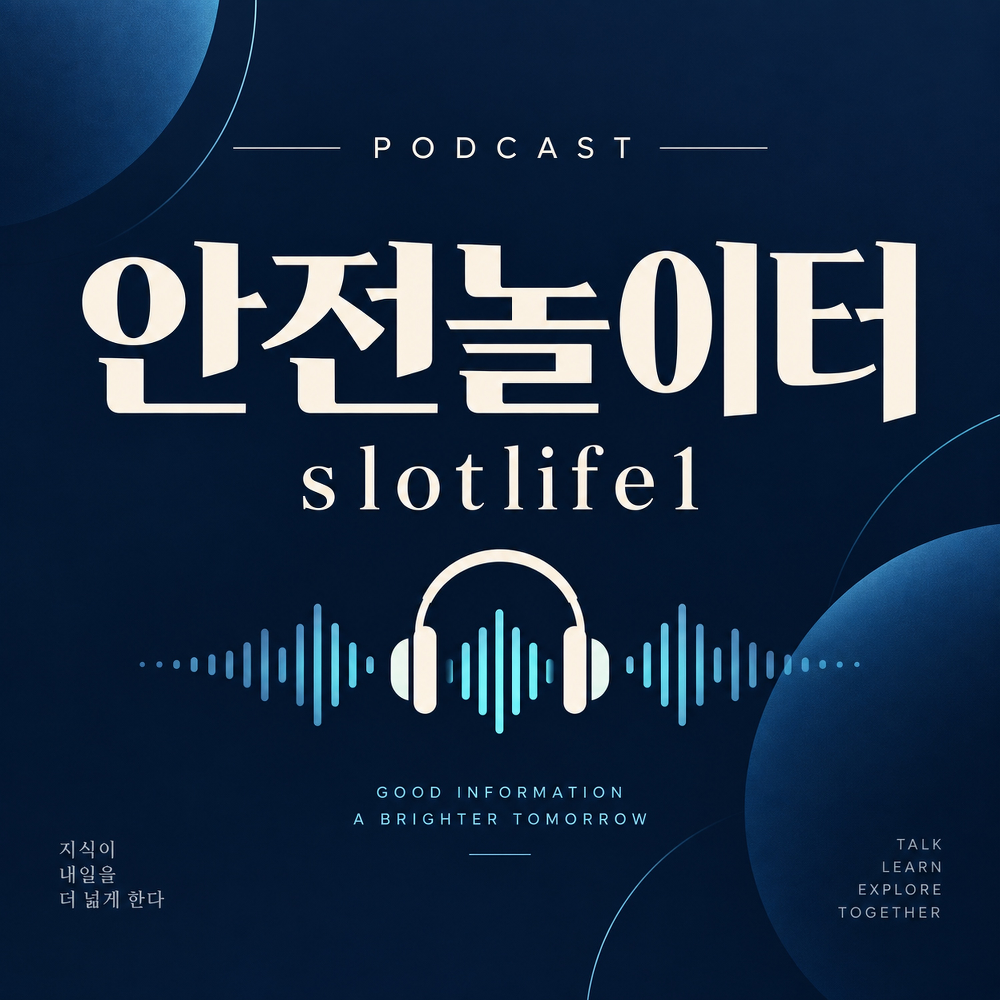

1화 · 안전놀이터 — 야구 BGM
안전놀이터의 첫 음악 에피소드입니다. 약 33초 길이의 야구 BGM 음원을 제공합니다. 이 회차는 음악 콘텐츠이며 야구 경기 중계, 음성 해설 또는 먹튀검증 결과 발표가 아닙니다. slotlife1 소개와 검증 자료를 읽는 방법은 방송 홈페이지의 별도 읽을거리에서 확인할 수 있습니다.
음원 길이: 약 33초 · 공개일: 2026년 10월 5일
SLOTLIFE1 · PODCAST

문구보다 근거를, 단정보다 확인 과정을 살펴봅니다.
안전놀이터는 BGM 음악 에피소드와 별도의 주제별 읽을거리를 제공합니다. 온라인에서 접하는 ‘먹튀검증’과 ‘보증놀이터’라는 표현을 어떻게 읽어야 하는지 홈페이지에서 살펴봅니다. slotlife1 관련 안내와 함께, 운영 정보와 이용 조건을 확인하고 제보 자료의 근거를 구분하는 방법을 다룹니다.
소개 문구가 길거나 후기가 많다는 이유만으로 확인이 끝나는 것은 아닙니다. 누가 언제 작성했는지, 무엇을 근거로 하는지, 조건이 바뀌지는 않았는지까지 살펴야 정보의 의미를 이해할 수 있습니다. 이 방송은 그런 확인 과정을 주제별로 풀어냅니다.
이 페이지의 ‘먹튀검증 보증놀이터’는 방송이 다루는 주제입니다. 특정 사업자의 안전성, 거래 이행 또는 손실 보상을 인증하는 표시가 아닙니다.
방송과 함께 읽는 안내
검색 결과에서 ‘검증’, ‘보증’, ‘추천’이라는 말을 발견하면 먼저 그 말이 가리키는 대상을 확인해야 합니다. 운영 주체를 확인했다는 뜻인지, 한 건의 이용 후기를 소개한다는 뜻인지, 별도의 보상 약정을 말하는지에 따라 필요한 자료가 달라집니다. 서로 다른 의미를 하나의 ‘안전하다’는 결론으로 묶지 않는 것이 출발점입니다.
검증 글을 볼 때는 결론보다 근거가 먼저입니다. 원문 링크, 작성 시점, 확인 대상, 확인 방법이 제시돼 있는지 살펴보세요. ‘오래 운영했다’, ‘이용자가 많다’ 같은 설명은 다른 사실을 확인하는 단서가 될 수 있지만, 개별 거래의 이행을 증명하는 자료와는 성격이 다릅니다.
예를 들어 ‘문제가 해결됐다’는 글에는 어떤 문제가 언제 발생했고 어떤 절차로 처리됐는지가 함께 있어야 맥락을 이해할 수 있습니다. 전후 상황이 빠진 한 장의 이미지나 출처가 없는 재인용만 있다면 판단에 필요한 정보가 부족한 상태로 남겨두는 편이 정확합니다.
제보 자료에서는 발생 날짜와 게시 날짜를 구분합니다. 오래된 사건이 최근 글처럼 재게시됐을 수도 있고, 초기 제보 이후 정정이나 후속 설명이 나왔을 수도 있습니다. 같은 사례가 여러 곳에 복사됐다고 해서 독립적인 제보가 여러 건이 되는 것은 아닙니다.
원본을 찾을 수 있다면 사건의 순서, 양측 설명의 존재 여부, 자료 일부가 생략됐는지를 비교합니다. 확인할 수 없는 부분은 추측으로 채우지 않습니다. 자료를 공유할 때에는 이름, 전화번호, 계좌번호 등 당사자의 개인정보가 노출되지 않도록 주의합니다.
보증이라는 단어만으로 보상 범위를 알 수는 없습니다. 누구의 약속인지, 어떤 상황이 대상인지, 한도와 제외 조건은 무엇인지, 신청 절차와 유효 기간이 있는지를 각각 확인해야 합니다. 게시물의 홍보 문구와 별도 약정의 내용이 다르면 그 차이도 확인 대상입니다.
금액이나 조건이 적혀 있더라도 실제 지급 능력과 이행 여부까지 입증되는 것은 아닙니다. 근거 자료가 없다면 ‘보증 문구가 표시돼 있다’는 관찰과 ‘보상이 확실하다’는 판단을 구분합니다.
운영 주체, 연락 방법, 이용약관, 개인정보 처리방침이 서로 일치하는지 봅니다. 조건을 찾기 어렵거나 질문에 대한 답변이 매번 달라진다면 확인되지 않은 부분을 기록해 두세요. 이벤트나 혜택을 설명하는 화면만으로 전체 조건을 판단하지 않습니다.
조건이 변경될 수 있으므로 확인 날짜와 문서의 적용 시점도 중요합니다. 이후 비교가 필요할 때는 관련 안내의 주소와 당시 표시 내용을 보관하되, 비밀번호나 인증번호 같은 비밀 정보는 공유하지 않습니다.
추천 글을 읽을 때는 작성자와 소개 대상의 관계도 살펴봅니다. 광고 또는 제휴가 있다면 이를 알고 읽을 수 있도록 밝혀져 있는지, 순위를 매긴 기준과 업데이트 시점이 있는지 확인하세요. 장점만 반복하고 평가 방법을 설명하지 않는 글은 비교 자료로서의 한계가 있습니다.
다섯 질문의 답이 비어 있다면 빈칸을 단정적인 표현으로 대신하지 않는 것이 중요합니다. 이 안내는 특정 사이트에 대한 검증 결과가 아니라, 정보를 읽을 때 사용할 확인 순서를 설명합니다.
안전놀이터의 첫 음악 에피소드입니다. 약 33초 길이의 야구 BGM 음원을 제공합니다. 이 회차는 음악 콘텐츠이며 야구 경기 중계, 음성 해설 또는 먹튀검증 결과 발표가 아닙니다. slotlife1 소개와 검증 자료를 읽는 방법은 방송 홈페이지의 별도 읽을거리에서 확인할 수 있습니다.
음원 길이: 약 33초 · 공개일: 2026년 10월 5일
정정 제안에는 대상 문장과 확인 가능한 출처를 적어 주세요. 공개 게시판이므로 개인정보나 거래 내역 원본은 올리지 마세요.